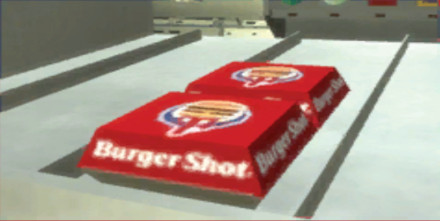

HEALTH/NUTRITION

Ever since the lefties got bored of targeting
the tobacco industry,Burger Shot has been taking a lot of flak. It's
pathetic. Do-gooders who we should have killed during the Cold
War telling us what freedom means? We're patriots, buddy.
3 Burger Shot.
Burger S What do you expect for less than a dollar? Chateaubriand? You
get what you pay for. Our food is cheaper than dog meat!
Sometimes ignorance is bliss. You don't want to know that your
sister loves it up the ass and you don't want to know that your
lunch is made from rancid animal intestines. But you wouldn't
leave it alone, would you?!!!! So here are the facts:
- Your sister really takes it... a lot.
- Your sister's friends have always laughed at you and assume you are penile puny.
- Most liberals are unsure of their sexual orientation.
- 90% of taste comes from smell (kind of disgusting to think what you
are tasting when the stench of a bum's butt mud hits you on a packed
subway!). We pay flavor companies in Alderney billions of dollars to
douse our food in sweet-smelling beef juice. Just like a girl puts on
make-up, and dumps perfume on her poo-poo-la-la, we brush all our
burgers with mascara to give them that flame-broiled look after
they are nuked in the microwave. If we took away the
chemically-manipulated smell and char-grill paint, you would be left
with a damp, grey slab of livestock matter that smells like your
grandmother's crotch.
- So much goes into a Burger Shot burger... including cigarette butts,
used condoms, beer bottles, old newspapers, glue and antifreeze.
We firmly believe that the life of a diseased animal should not be in
vain and we make sure that nothing goes to waste: urine, vomit and
fecal matter all get swept into the meat pit.
- We've stopped cooking our fries in lard and have switched to a
mixture of hydrogenated vegetable oil and beef extract. Ssssh! Don't
tell the gastronomically ludicrous religious freaks and the
vegetarians! They have just as much saturated fat but, hey, that is
better than cholesterol!
- You can now get salad. Happy now?! Who goes to a fast food
restaurant to eat salad? Sorry, but this makes us really angry. So
angry, in fact, that we decided to load our salad cups with more fat
than the burgers! Begrudgingly, we will also be adding deep-fried
broccoli to the menu at the end of the year. Stick that in your artery
and smoke it.
- Our food cannot be that bad. The burgers are 50% water, which is
supposed to be good for you, and they work their way through your
system like a tapeworm on speed. They are also great for a
hangover. They'll give you one five minutes after finishing your meal.
- Just to keep you off our back, we are going to start putting very
conservative estimates of fat and calorie content on the burger
boxes. This way you can find out at least part of the horrifying truth
AFTER you have purchased the sandwich. It is then up to you whether
you eat it, throw it in the trash or save half for the next day (not
recommended).